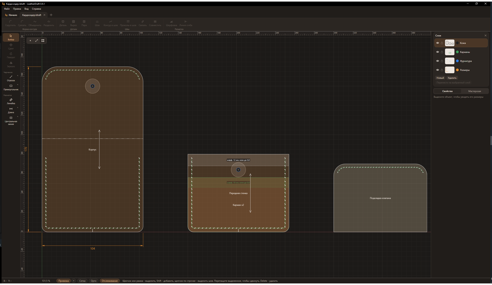
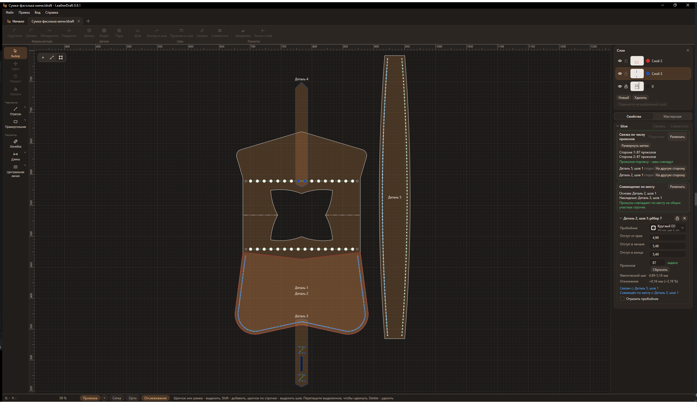
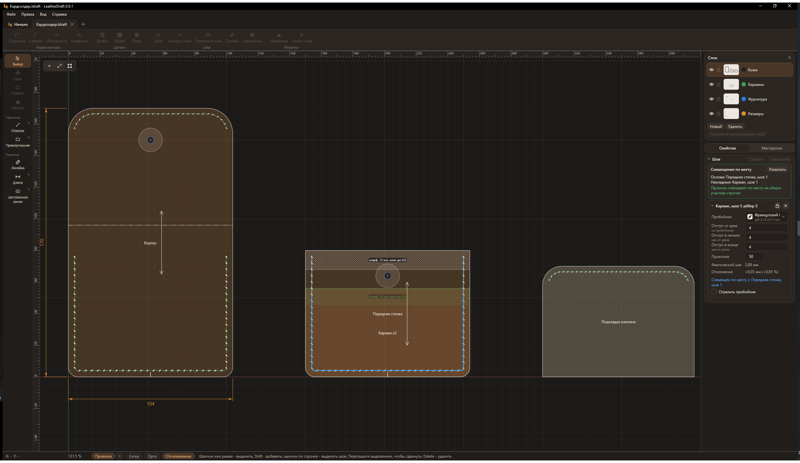
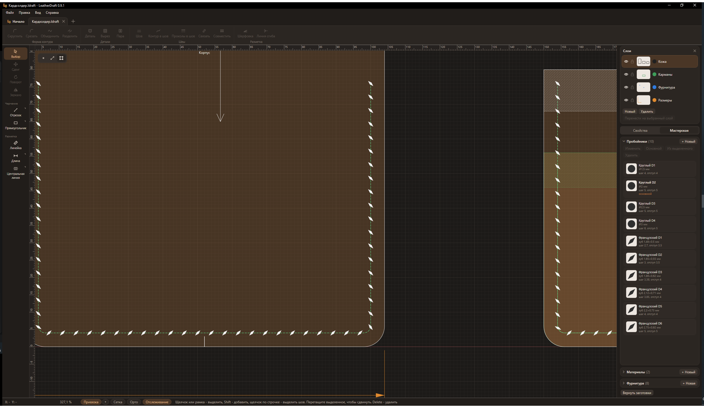
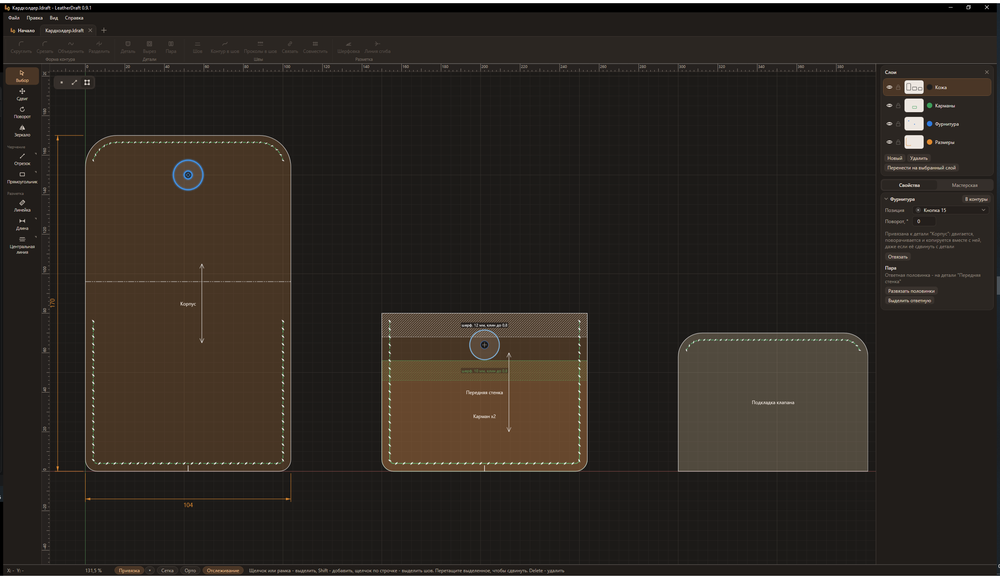
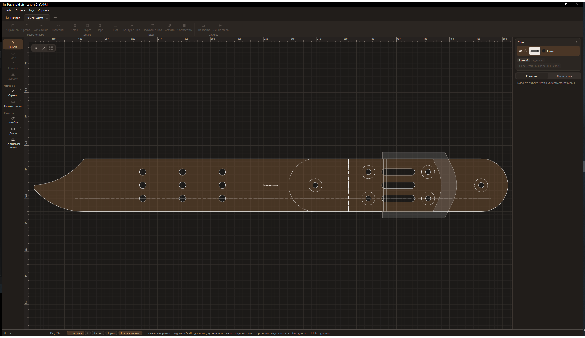
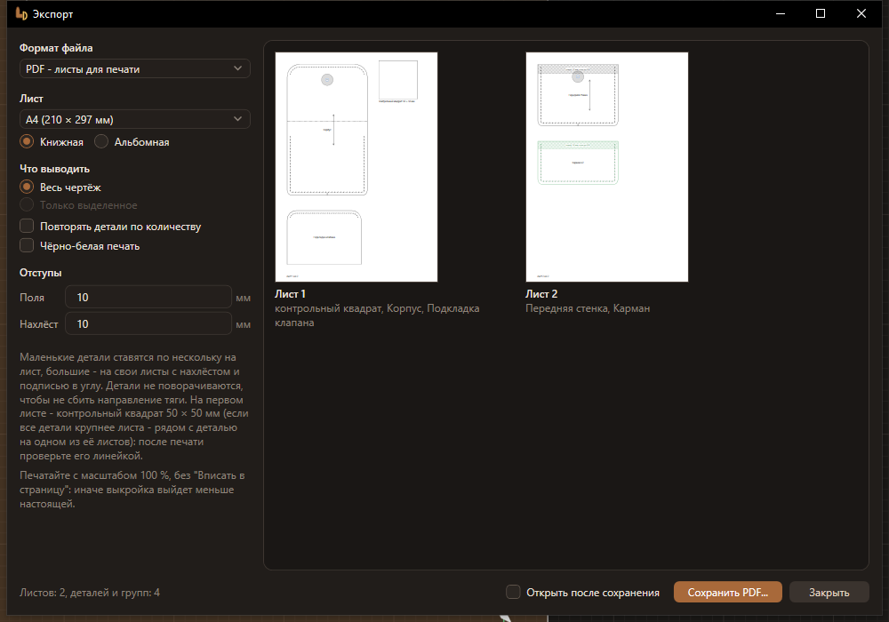

Выкройки изделий из кожи
Чертите детали, ставьте швы с проколами под свой пробойник, печатайте выкройку в натуральную величину или отдавайте на лазер и режущий плоттер.
Бесплатно, в том числе для работы на продажу. Windows 10 и 11.


Что умеет
Всё, что нужно, чтобы от контура дойти до готовой выкройки, по которой можно кроить и шить.
Детали и швы
Детали и вырезы, строчки с проколами под ваш пробойник и шаг. Шов по всему краю или только по нужным рёбрам.
Связанные швы
На сшиваемых сторонах выходит одинаковое число проколов. Накладные детали совмещаются по месту: проколы кармана встают на проколы стенки.
Разметка
Метки совмещения, линии сгиба, шерфовка, стрелка направления тяги, размеры и осевые линии.
Фурнитура
Кнопки, хольнитены, люверсы, прорези. Половинки кнопки связываются в пару, а пробойники, кожа и фурнитура хранятся в вашей мастерской.
Черчение
Отрезки, контуры с плавными кривыми, дуги, окружности, скругление и срез углов, удлинение и отступ, привязки и ввод точных размеров.
Печать и экспорт
Печать в натуральную величину на A4 и других листах с нахлёстом и контрольным квадратом. PDF, SVG и DXF для лазера и плоттера, открытие DXF, DWG и SVG.
Как это выглядит
Снимки из программы, тёмная тема. Щелчок открывает снимок целиком.












Скачать
Программа бесплатная, в том числе для работы на продажу. Выкройки, сделанные в ней, принадлежат вам.
Требования
- Windows 10 или 11, 64-разрядная.
- Около 20 МБ на диске C. Если на компьютере нет среды .NET 8, установщик поставит её сам - это ещё около 160 МБ.
- Права администратора не нужны.
- Интернет нужен только для установки .NET 8 и для обновлений, работать можно без сети.
- Для печати выкроек - любой принтер.
Установка
- Скачайте установщик и запустите его. Программа ставится для вашей учётной записи.
- Windows может показать окно "Windows защитила ваш компьютер": у программы пока нет платной цифровой подписи. Нажмите "Подробнее", затем "Выполнить в любом случае".
- Если на компьютере нет среды .NET 8, установщик скачает и поставит её сам.
Обновления приходят сами: раз в день программа проверяет, не вышла ли новая версия, и ставит её, когда вы закроете программу. Отключить это можно в настройках, раздел "Обновления". Удалить программу можно как любую другую: "Параметры Windows" - "Приложения" - LeatherDraft. Ваши чертежи при этом остаются на месте.
Нашли ошибку или есть идея
Напишите в раздел Issues. Чтобы ошибку было проще найти, укажите версию программы (она в заголовке окна), что вы делали и что пошло не так. Если программа сообщила об ошибке, приложите журнал %LocalAppData%\LeatherDraft\logs\errors.log, а если ошибка связана с чертежом - файл .ldraft.